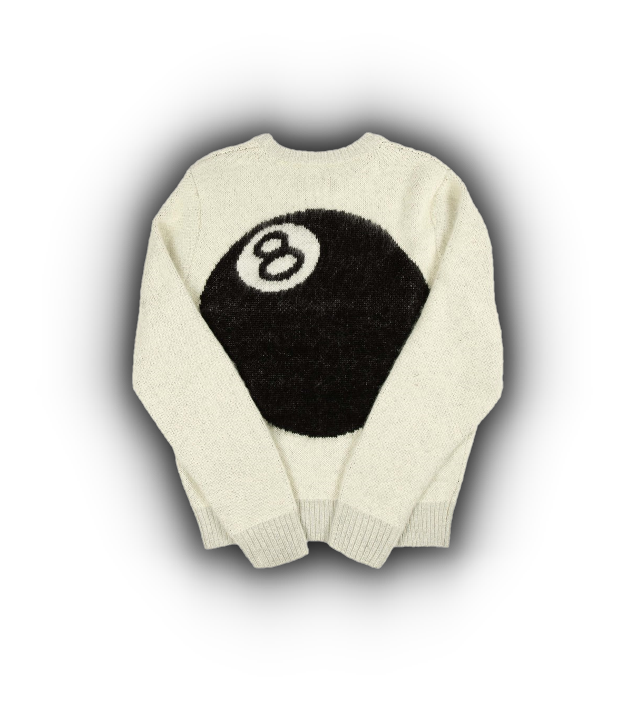

This clothing style first started gaining popularity in the 1990s in New York and California. Streetwear has always gotten its inspiration from a plethora of different urban subcultures, such as hip hop, punk, surfing, and skateboarding. Since its conception, streetwear has grown to become one of the most popular fashion styles in the world. Many streetwear designers were previously looked down upon in high fashion culture, but now many of these designers are some of the most influential names in the industry.
Shawn Stussy created the brand "Stussy" in Laguna Beach, California, in the early 1980's. They originally created surfwear clothing, which was a trend in southern California at the time. Over time, the brand's style aesthetic shifted towards skateboarding, hip hop, and punk. While it has always been a fairly popular brand, in recent years it has become one of the most highly coveted brands in the streetwear scene. Their logo and its typography have become iconic in fashion culture, that along with their simple yet beautiful graphics, have cemented them as one of the most popular brands in streetwear today.
